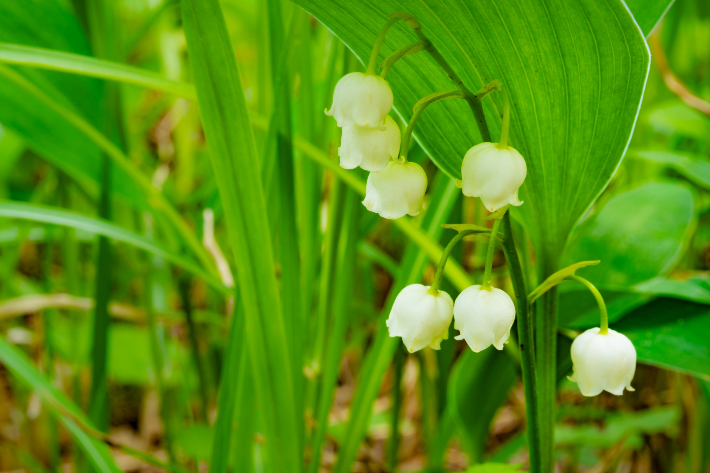

笛吹市
笛吹市とは？
笛吹市とは山梨県の中央に位置する、果樹栽培が盛んにおこなわれている自然豊かな町です。
一部の地域は「峡東地域の果樹農業のシステム」として世界農業遺産に指定されています。
また年間23,000トンの桃が収穫される「日本一の桃の産地」として有名です。
自然
笛吹市の東側は山地に囲まれており、豊かな自然が広がっています。


農業
春の季節にはピンクの花で町が染まり、夏には豊かな緑で覆われます。